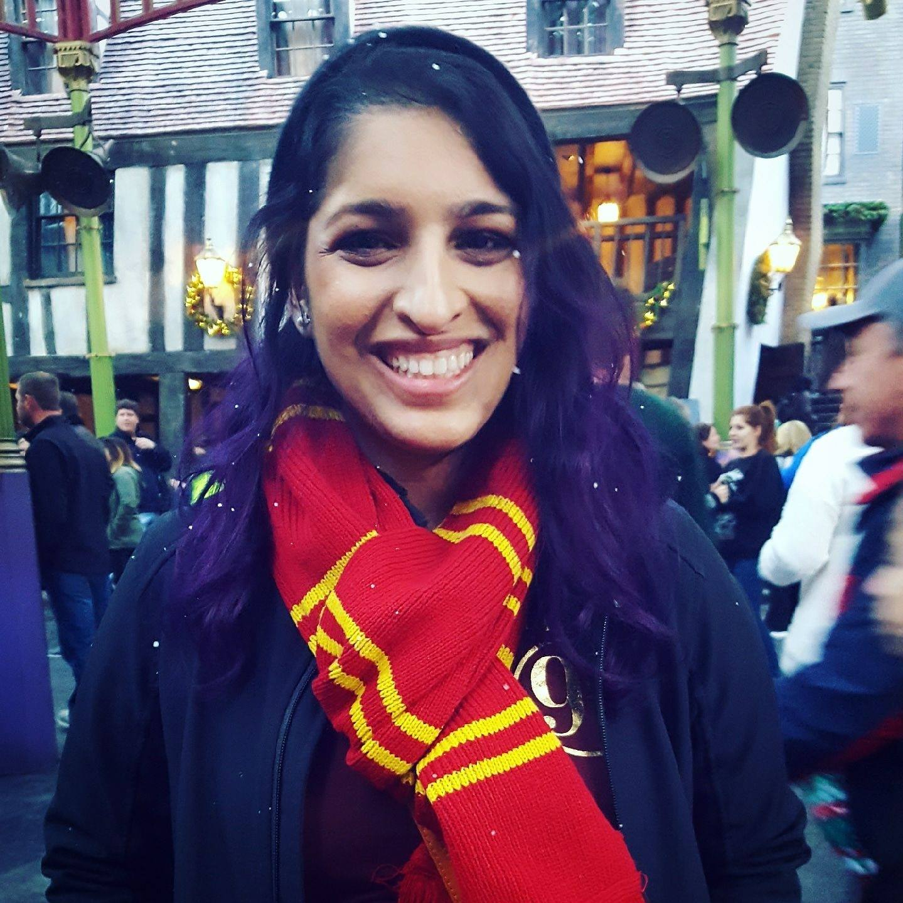

About Me
Hello! I am a graphic designer currently working at Clear Channel Out door. I grew up in Florida and graduated from the University of Central Florida in 2015. I enjoy movies, illustrating, and gaming. I got married last year to my husband, Noah Castro. We both live in Maitland, FL with our three cats, Kitcat, Mowgli, and our new kitten, Nona
Connect with Me